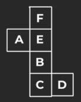
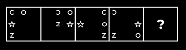

Statements:
Some pianos are violins.
Some violins are drums.
All drums are guitars.
No guitar is a flute.
Conclusions:
I. Some guitars are pianos.
II. Some drums are flutes.
III.Some pianos are drums.
IV. No flute is a drum.
Ans - D
Statements:
All cups are glasses.
Some glasses are bowls.
No bowl is a plate.
Conclusions:
I. No cup is plate.
II. No glass is a plate.
III. Some plates are bowls.
IV. Some cups are not glasses.
Ans - A
Point Y is in which direction with respect to point X?
Statement I
Point A is east of point B and north of point X. Point Y is north-west of point A.
Statement II
II. Point X is east of point B and north of point A. Point Y is north of point A.
Ans - E
Six Students ( A,B,C,D,E,and F ) are sitting in a row facing north . At least two people are sitting on both the sides of B and C . A and F are at the ends . D is sitting to the immediate right of F . Who is sitting immediate left of A ?
Ans - D
Read the following information carefully and answer the given questions.
There are eight people in a family, all of them are going for vacation. There are two married couple in the family. C is the mother of B. E is the daughter of A who is the sister of F. C is the only sister of G. H is father of C. D is the mother of C. A is the wife of G.
Question : Who among the following is grandfather of E?
Ans - D
Read the following information carefully and answer the given questions.
There are eight people in a family, all of them are going for vacation. There are two married couple in the family. C is the mother of B. E is the daughter of A who is the sister of F. C is the only sister of G. H is father of C. D is the mother of C. A is the wife of G.
Q. How F is related to G?
Ans - D
In the following questions find out the alternative which will replace the question mark.
58 : 319 :: 32 : 176 :: 76 : ?
Ans - D
Identify the figure given in the options which when put in place of (?) will logically complete the series.
Ans - A
Statement
All P are G
Some G are B
All B are C
Conclusion:
(1) All P being C is a possibility
(2) Some P are B.
(3) Some C are G.
(4) Some G are P.
Ans - B
In a given figure of open dice. Which dice we can make?

Ans - B
Ans - C
Ans - D
In each question below is given a statement followed by three courses of action numbered I and II and III. You have to assume everything in the statement to be true and on the basis of the information given in the statement, decide which of the suggested courses of action logically follow(s)
Statement:
India's pre-eminent position in the world black pepper production and trade is in danger as some of the countries, which recently started production of the 'king of the spices' crop from Indian root stocks, are farming better by adopting modern cultivation practices.
Courses of action:
I. India should immediately stop supplying root stocks of black pepper to other countries.
II. India should adopt modern technology for cultivating black pepper to complete in the International market.
III. India should reduce the price of its black pepper to remain competitive in the world market.
Ans - C
In a certain code language,
'CARD' is coded as'7359’,
'SERV' is coded as '1256' and
'PACK' is coded as '8497’.
What is the code for 'D' in the given code language?
Find the missing series :
742 2073 345 2542 ? 3173
Ans - B
Find the missing series :
16 17 21 ? 304 3429
Ans - B
Study the following arrangement carefully and answer the questions given below:
N 4 7 T U J K 3 % F @ © L N 5 P 1 8 U $ E 2 D C 6 # 9 Z Q 8 Y * M A
Which of the following is sixth to the left of the fifteenth from the left end of the given arrangement?
Ans - C
Four letter-clusters have been given, out of which three are alike in some manner and one is different. Select the letter-cluster that is different
Ans - D
Each of the following questions below consists of a question and two statements numbered I and II given below it. You have to decide whether the data provided in the statements are sufficient to answer the question. Read both the statements and give answer.
Question : Among five friends P, Q, R, S and T having different heights, who is the tallest?
Ans - B
Select the figure that will replace the question mark (?) in the following figure series

Ans - A